第三周作业
统计出/etc/passwd文件中其默认shell为非/sbin/nologin的用户个数，并将用户都显示出来
使用“cat /etc/passwd” 命令查看配置文件，/sbin/nologin都是作为行尾
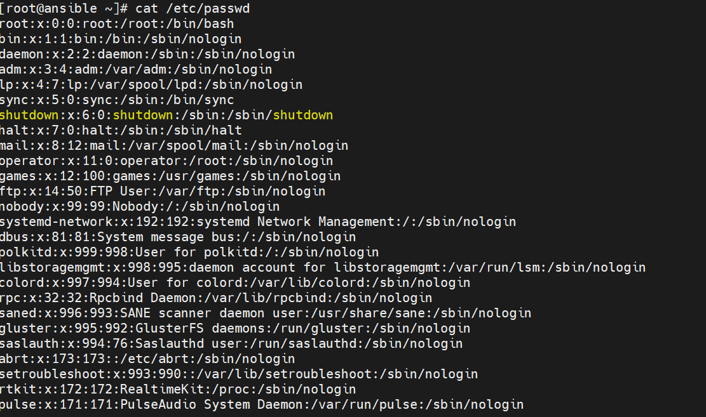
使用正则表达式位置锚定将以任意字符开头，以/sbin/nologin结尾的用户匹配出来
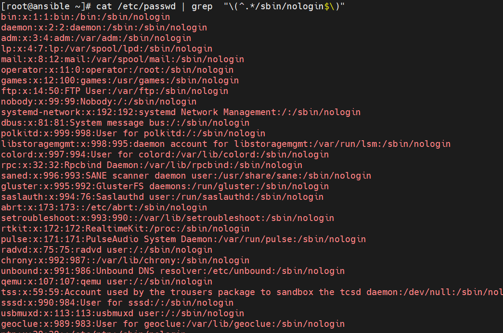
确认所有/sbin/nologin用户都匹配出来后，使用grep -v选项将非s用户匹配出来
1 | |
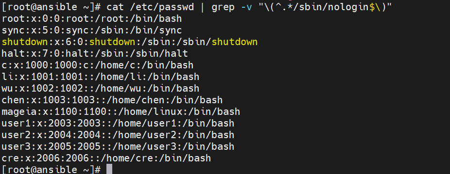
一个用户是一行，此时可以使用wc -l 将行数统计出来，统计出行数就可以统计出题中所需求的用户数
1 | |
使用cut -d命令，以“：”为分隔符，将第一行取出来，就可显示出题中所需用户
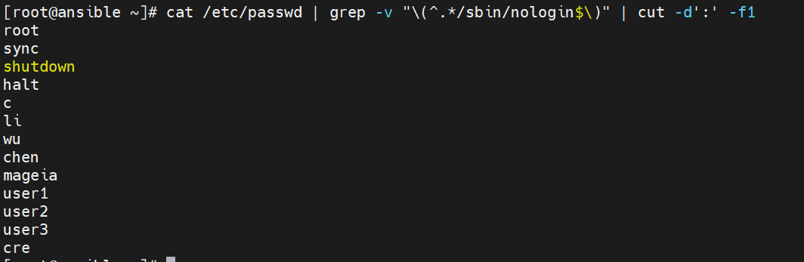
查出用户UID最大值的用户名、UID及shell类型
使用 cat /etc/passwd命令查看配置文件，发现和用户有关的参数格式都是用“USER:x:UID:GID::家目录:shell”这样的格式组成
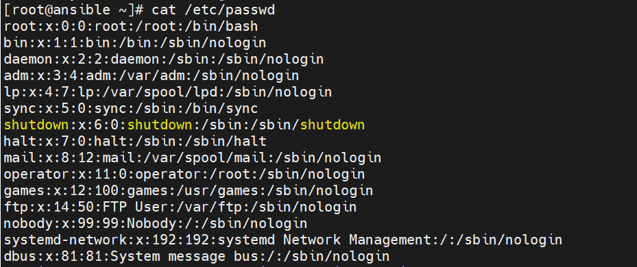
此格式可以用“：”作为分隔符来取数据，但冒号数量不一致，此时可以使用cat /etc/passwd | tr -s “:”命令将冒号进行压缩
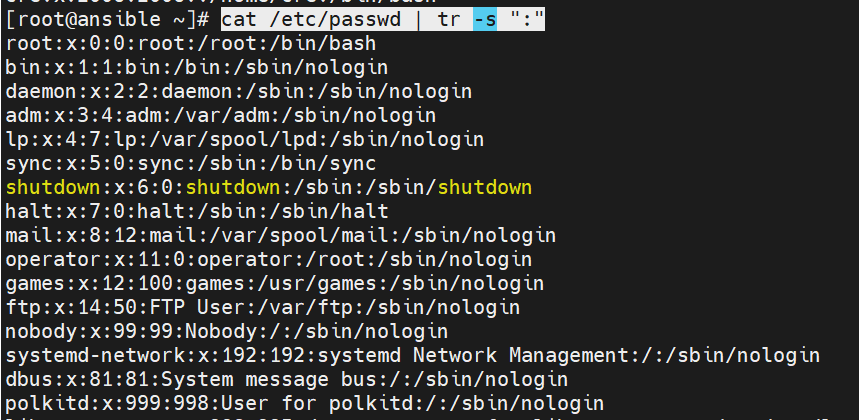
将“：”压缩之后，以“：”作为间隔符，使用cut -d”:” -f1,3,7命令取配置的第1，3，7列，这样就将所有用户的 用户名 UID shell类型给取出来了
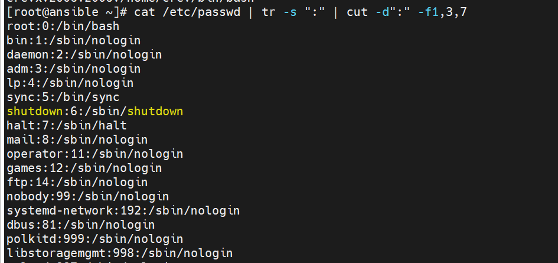
取出来后的数据，第二行都是大小不等的数字，此时可以使用sort命令 以“：”作为分隔符，取第二列进行反向排序
1 | |
排序后UID最大的用户就显示在了第一行，然后使用head命令取行首，将用户取出
1 | |
统计当前连接本机的每个远程主机IP的连接数，并按从大到小排序
使用 ss -t查看当前连接的远程主机IP
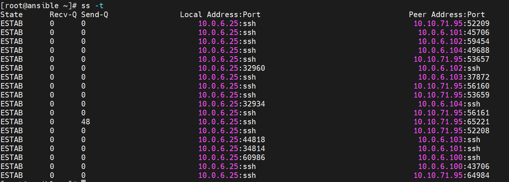
需要将目标主机取出来，使用空格作为分隔符，但空格数量布确定 故使用tr -s ‘ ‘命令将空格压缩，然后使用cut命令取出其中第五列，将主机数量取出
1 | |
取出主机数量后发现第一行不是题目所需内容 使用tail -n +2将第一行剔除掉，得到了远程主机的信息
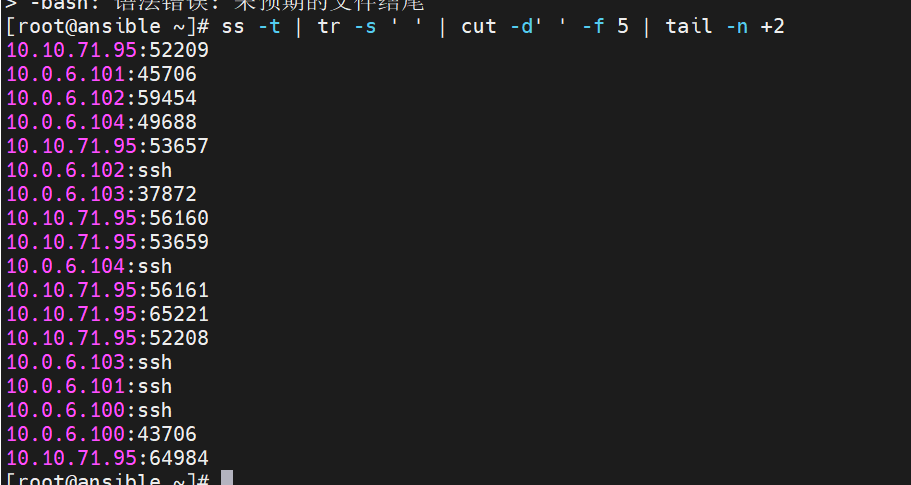
得到远程主机信息后发现后面还带有端口号，使用正则表达式将IP过滤出来
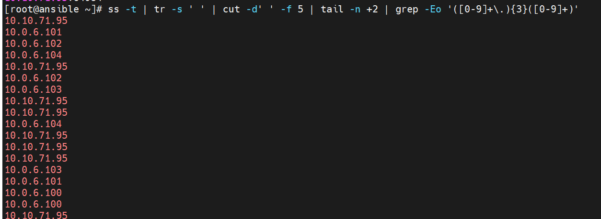
使用 sort命令进行一次排序，将IP地址按照顺序列出来，然后使用uniq -c进行去重和统计IP出现次数
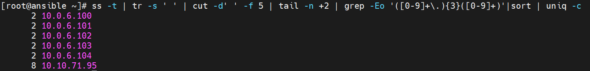
最后使用 sort -nr将IP从大到小排列出来
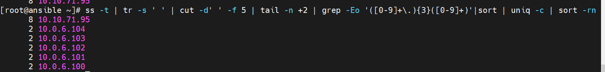
编写脚本disk.sh，显示当前硬盘分区中空间利用率最大的值
使用df命令查看已经挂载的文件系统信息
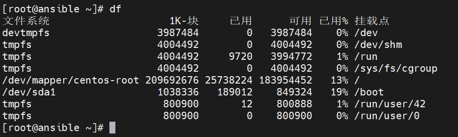
使用正则表达式将分区信息和利用率匹配出来
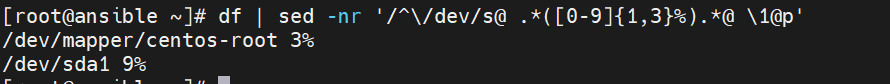
使用sort -rn 倒序将分区利用率从大到小排序，使用head命令将利用率最高的分区取出来
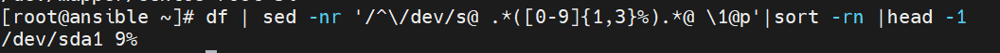
编写成脚本
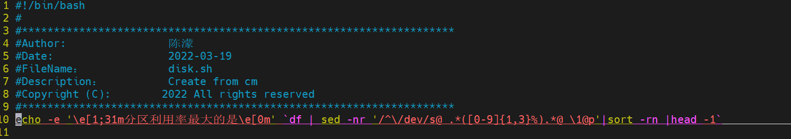
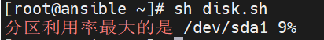
编写脚本 systeminfo.sh，显示当前主机系统信息，包括:主机名，IPv4地址，操作系统版本，内核版本，CPU型号，内存大小，硬盘大小
使用命令将主机名 ip4地址 os版本 内核版本 cpu 内存和硬盘大小显示出来
主机名：
1 | |
ip4地址
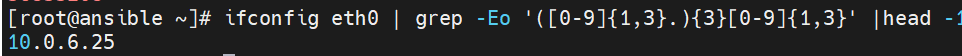
os版本
1 | |
内核版本
1 | |
cpu型号
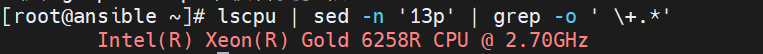
内存大小
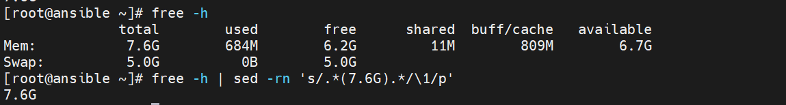
硬盘大小
1 | |
写成脚本
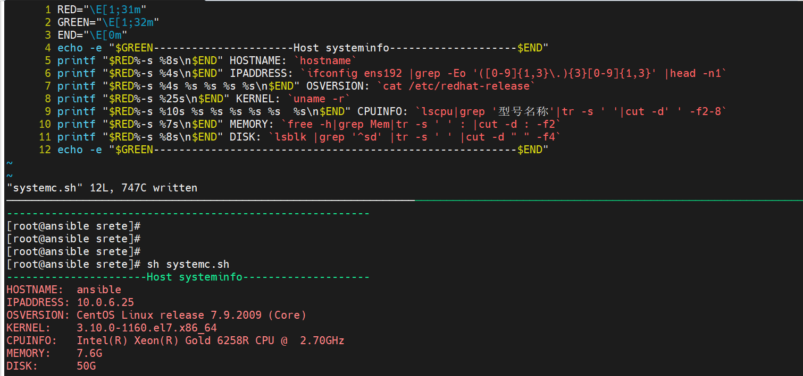
本博客所有文章除特别声明外，均采用 CC BY-SA 4.0 协议 ，转载请注明出处！